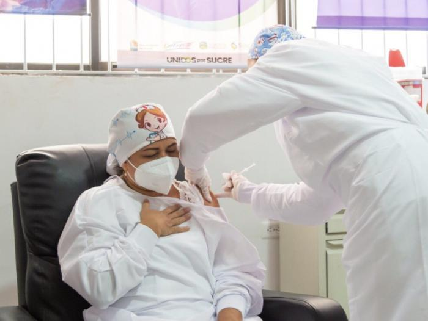
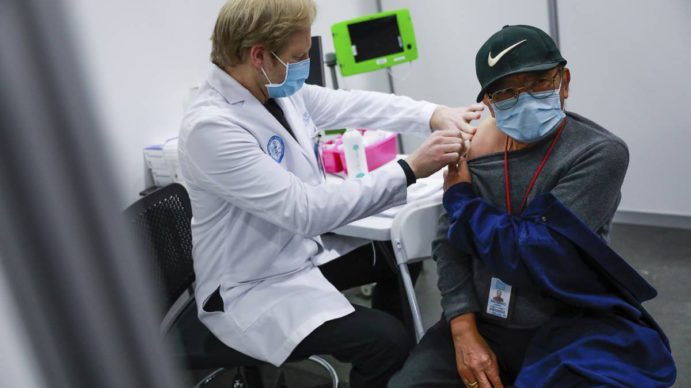

la enfermera Verónica Machado del Hospital Universitario
de Sincelejo se convirtió este miércoles en la primera persona en el país en
recibir la vacuna contra la Covid-19,
con lo que se da inicio oficialmente al plan masivo de vacunación
contemplado por el Gobierno de Iván Duque.
«A medida que van llegando los lotes de vacunas se van asignando de
acuerdo a esa fórmula», dijo el mandatario.
«Este proceso tiene muchísimas aristas logísticas, pero todos estámos
trabajando en el propósito de sacarlo adelante con éxito», puntualizó.

La enfermera veronica machado, aun esta bajo la inspeccion sobre cualquier efecto secundario que pueda tener.
Varias personas han estado creando falsos numeros, cuetas y demas para estafar a la gente con una "vacuna" que le inyectan por un precio bajo, pero en realidad, no haga este tipo de procesos, ya que la vacuna oficial se probo hace poco en la doctora Veronica machado